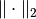
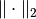
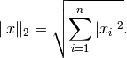
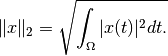

L2Norm¶
- class odl.solvers.functional.default_functionals.L2Norm(*args, **kwargs)[source]¶
Bases:
LpNormThe functional corresponding to the L2-norm.
The L2-norm,
||x||_2, is defined as the square-root out of the integral/sum ofx^2.Notes
If the functional is defined on an
 -like space, the
-norm is defined as
-like space, the
-norm is defined as
If the functional is defined on an
 -like space, the
-norm is defined as
-like space, the
-norm is defined as
- Attributes:
adjointAdjoint of this operator (abstract).
convex_conjThe convex conjugate functional of the Lp-norm.
domainSet of objects on which this operator can be evaluated.
grad_lipschitzLipschitz constant for the gradient of the functional.
gradientGradient operator of the functional.
inverseReturn the operator inverse.
is_functionalTrueif this operator's range is aField.is_linearTrueif this operator is linear.proximalReturn the proximal factory of the functional.
rangeSet in which the result of an evaluation of this operator lies.
Methods
__call__(x[, out])Return
self(x[, out, **kwargs]).bregman(point, subgrad)Return the Bregman distance functional.
derivative(point)Return the derivative operator in the given point.
norm([estimate])Return the operator norm of this operator.
translated(shift)Return a translation of the functional.
- __init__(space)[source]¶
Initialize a new instance.
- Parameters:
- space
DiscretizedSpaceorTensorSpace Domain of the functional.
- space